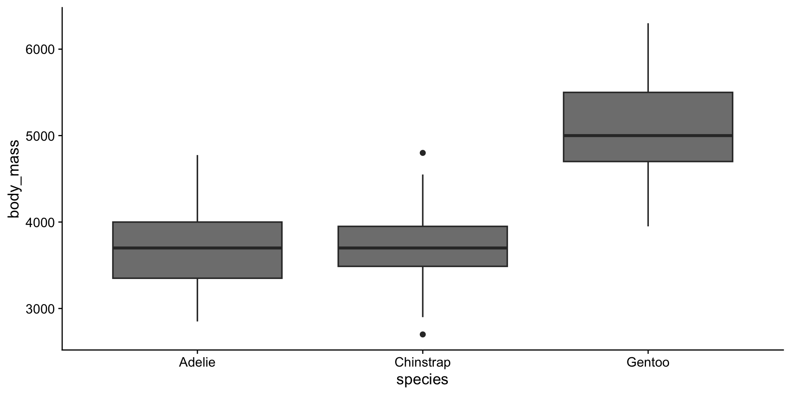
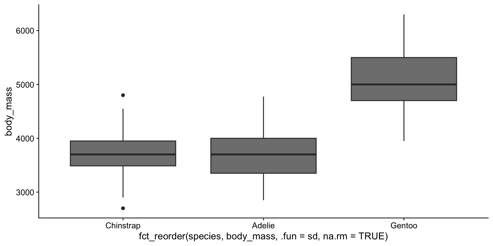
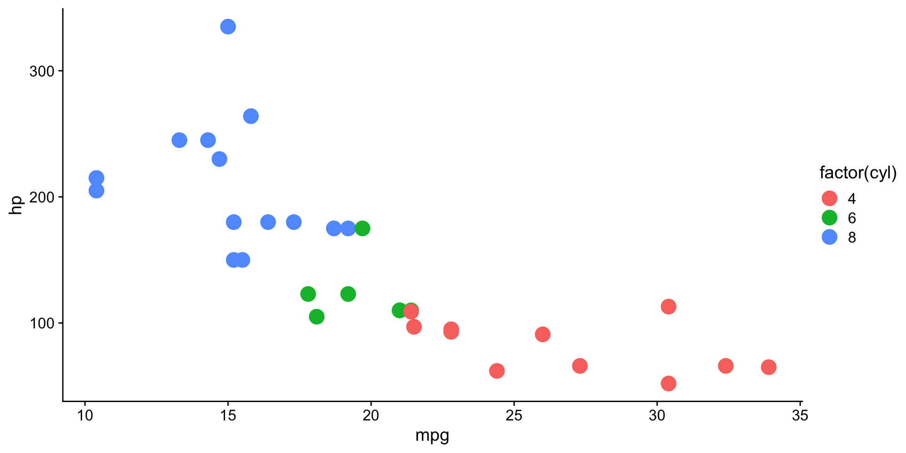
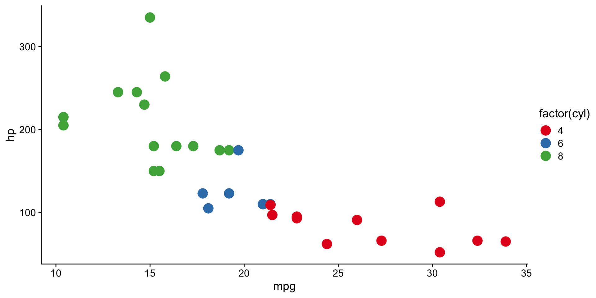
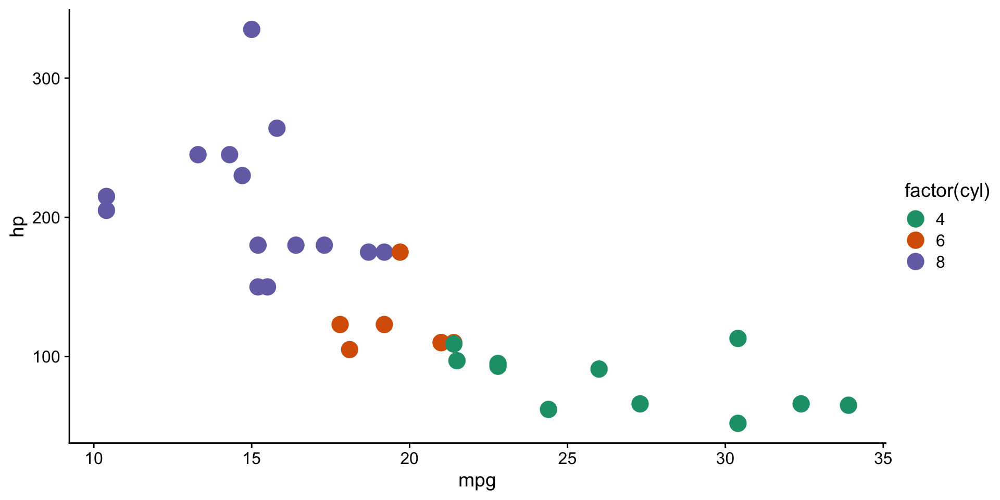

Tidyverse odds & ends
RNA Bioscience Initiative | CU Anschutz
2025-09-28
stringrforcatsdplyrggplot2str_c()[1] "letter: a" "letter: b" "letter: c" "letter: d"
[5] "letter: e"# A tibble: 344 × 5
species island year id label
<fct> <fct> <int> <chr> <chr>
1 Adelie Torgersen 2007 Adelie_Torgersen Adelie (2007)
2 Adelie Torgersen 2007 Adelie_Torgersen Adelie (2007)
3 Adelie Torgersen 2007 Adelie_Torgersen Adelie (2007)
4 Adelie Torgersen 2007 Adelie_Torgersen Adelie (2007)
5 Adelie Torgersen 2007 Adelie_Torgersen Adelie (2007)
6 Adelie Torgersen 2007 Adelie_Torgersen Adelie (2007)
7 Adelie Torgersen 2007 Adelie_Torgersen Adelie (2007)
8 Adelie Torgersen 2007 Adelie_Torgersen Adelie (2007)
9 Adelie Torgersen 2007 Adelie_Torgersen Adelie (2007)
10 Adelie Torgersen 2007 Adelie_Torgersen Adelie (2007)
# ℹ 334 more rowsstr_detect() [1] TRUE FALSE FALSE FALSE FALSE FALSE FALSE FALSE FALSE
[10] FALSE# A tibble: 7 × 12
name mpg cyl disp hp drat wt qsec vs
<chr> <dbl> <dbl> <dbl> <dbl> <dbl> <dbl> <dbl> <dbl>
1 Merc 240D 24.4 4 147. 62 3.69 3.19 20 1
2 Merc 230 22.8 4 141. 95 3.92 3.15 22.9 1
3 Merc 280 19.2 6 168. 123 3.92 3.44 18.3 1
4 Merc 280C 17.8 6 168. 123 3.92 3.44 18.9 1
5 Merc 450SE 16.4 8 276. 180 3.07 4.07 17.4 0
6 Merc 450SL 17.3 8 276. 180 3.07 3.73 17.6 0
7 Merc 450S… 15.2 8 276. 180 3.07 3.78 18 0
# ℹ 3 more variables: am <dbl>, gear <dbl>, carb <dbl>str_split()# A tibble: 3 × 5
sample_ids split_parts gene_part number_part condition
<chr> <list> <chr> <chr> <chr>
1 gene_1_treatm… <chr [3]> gene 1 treatment
2 gene_2_control <chr [3]> gene 2 control
3 gene_3_treatm… <chr [3]> gene 3 treatmentfct_count()# A tibble: 3 × 2
species n
<fct> <int>
1 Adelie 152
2 Chinstrap 68
3 Gentoo 124# A tibble: 3 × 2
f n
<fct> <int>
1 Adelie 152
2 Chinstrap 68
3 Gentoo 124fct_reorder()fct_reorder()

fct_lump()sample() and reproducibilityOpen up the tidyexplain page.
Joins combine data from two tables based on matching keys.
left_join() - keep all rows from left tableMost common join - keeps all observations from the “primary” table.
inner_join() - keep only matching rowsOnly keeps rows that exist in both tables.
full_join() - keep all rows from both tables# A tibble: 4 × 3
name band plays
<chr> <chr> <chr>
1 Mick Stones <NA>
2 John Beatles guitar
3 Paul Beatles bass
4 Keith <NA> guitarKeeps everything, filling missing values with NA.
scale_color_brewer() and scale_fill_brewer() control color and fill aesthetics.


Use the {patchwork} package.
Saves last plot as 5’ x 5’ file named plot_final.png in working directory.
Matches file type to file extension (*.png, *.jpeg, *.pdf).
We’ll use a couple of approaches to display data in tables instead of graphs, which can be useful for reports or presentations.
knitr::kable()knitr::kable()| species | island | body_mass |
|---|---|---|
| Adelie | Torgersen | 3750 |
| Adelie | Torgersen | 3800 |
| Adelie | Torgersen | 3250 |
| Adelie | Torgersen | NA |
| Adelie | Torgersen | 3450 |
| Adelie | Torgersen | 3650 |
| Adelie | Torgersen | 3625 |
| Adelie | Torgersen | 4675 |
| Adelie | Torgersen | 3475 |
| Adelie | Torgersen | 4250 |
gtgt